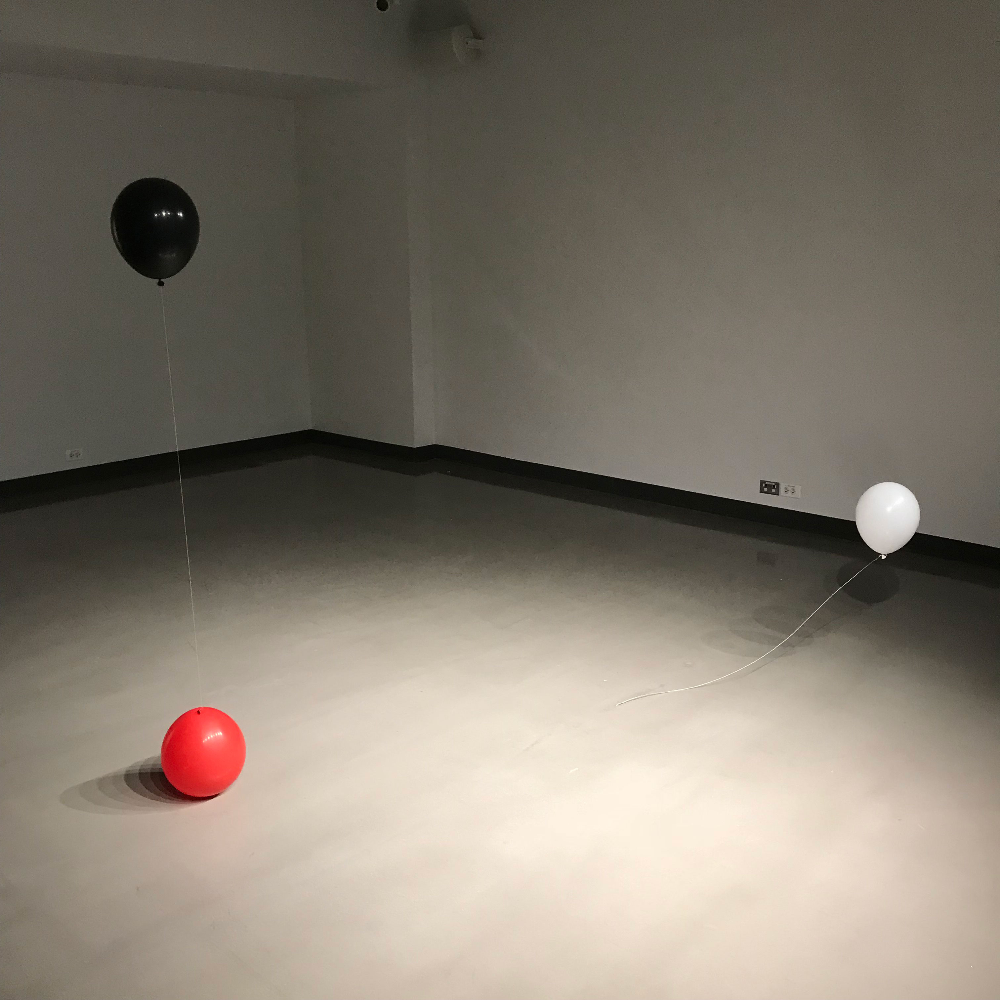

BALANCE
2018
"subtle bodies being in suspense"
Materials:
balloons x3
string
hammer and chisel
Untitled
2019
In collaboration with
Nelly Lin
Loss of Privacy as an Emergent Horizon
text
images
Materials:
androgynous mannequin
projector
computer + software
security camera + router
tripod
concealed microphone + speaker
extruded aluminum structural materials
mirror panes
polycarbonate panes